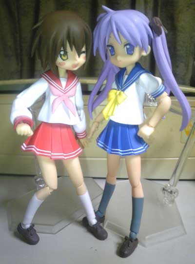
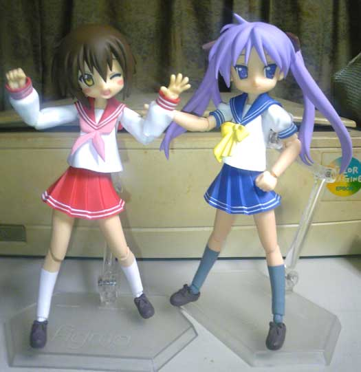

{kind=link}
{kind=link}
{kind=link}
{kind=link}
{kind=link}
{kind=link}
New 10/2/2(TUE)
ルナティアという無料ネトゲを大犬さんと一緒に始めましたｖ

まずはマイキャラ紹介～ぱみるってキャラメインでやってますー
冒険を数時間ほど進めていくと、こんな風に乗り物やペットを連れられるようになりますｖ
{kind=link}
ばびゅーんっ！と大砲でぶっとびーｖ 雄大な景色ｖ
こんな風に長距離移動が、画面が切り替わるだけでなくちゃんと大砲で発射されますｖ
こんな遊び心も忘れられてません～ｖ
ちみっこが大剣を振り回すのはロマン！（笑
ラグナロクオンラインでも両手剣士を好きでやってましたが、これはそれ以上ｖ
これがりみるっていうサブキャラです。
そしてネタバレ注意→とある魔術の禁書目録イベントシーン>！
最初から上条冬麻が最代の街に入ったすぐにいるのでチェックチェックｖ
{kind=link}
↑のような３Dキャラだけでなく２次元キャラ絵も用意されてる贅沢っ
イベント終了まではけっこう時間がかかりますが、このためにやっても損なし！（笑

そｗｗしｗｗてｗｗ！
趣味丸出しのギルドなんか作っちゃったり、ペットのリスの名前をパチリスにしたりっｖ
こんなふうにいろいろたのしみがあるし、テンポ良くイベントもレベル上げも進められるので
お時間のある方で、なんかゲームしたいなーって人にオススメですｖ
「プリージア」サーバ→「プリマス＝ユニオン国」→ぱみる
でやっているので、メッセいれてもらえればｖ
ぱんちら>もあるよ！っ（笑
{kind=link}
（更新日 10年2月2日TUE.）

pixivで先行公開しましたが、はなまる幼稚園杏ちゃん絵ｖ
最初はディフォルメがきつすぎて萌えないかなーと思ってたんですが、
すごい設定萌えｖ 親公認で幼稚園児と恋人とかおいしすぎます＞＜
自分、このくらいの頭身だと脳内補完ｗ
漫画は読んでないのでこれからの展開にも期待ですｖ
（更新日 10年1月23日SAT.）
新年初更新は、絵チャ絵のおめかし幼はづきさんで～ｖ
新年あけましておめでとうございます！（おそいﾖ；
いやー更新１ヶ月以上ぶりとなりました；
ここ最近は「くるみるく」さんの大犬犬太さんと
らき☆すたみさお本の原稿など進めて楽しい日々ですｖ
そんなわけで高校生を練習してるので
幼絵で中和という感じで、いそぎですが描いてみましたｖ
大阪オフ、コミケ遠征について、その他もろもろ年末年始の言い訳は日記の方で！
今年は去年よりさらに大変な年になりそうですが、
みなさんにとって！私にもとって！(笑)いい年になりますようにっ！
（更新日 10年1月19日TUE.）
たいした更新では無いのですが、左のイラスト欄がだだ長に伸びてしまうので(笑
最近練習してるみさお絵チャ絵などを～ｖ

左がくるみるくさんとの合同誌の表紙案ｖ
スキマにかがみん達を入れてにぎやかな感じにしようかとｖ
みさお好きの方！ゲスト寄稿募集してますのでよろしくおねがいします！(_ _ヾ
右は少しでも高校生らしく、5.5頭身で描くかロリ幼く4.5投身にするかというー。
5.5投身でかわいく！ がいいと思うのですがどうでしょう～
…そして

どれみ絵チャにちょっと出張みさおっち！ｖ
そして入室されていらしたパスキーさんが食いついてきて
描いてみるもんだなーｖ なんて思いましたｖ
みさお合同誌にお誘いしちゃっていいかナー？なんて（＾＾*
{kind=link}
そして最後に原作7巻模写含めたパーカースタイルみさお～ｖ
スカートなのは多分完全に私の趣味ｗ
みさお本の漫画では色々な格好させてあげたいので
精鋭練習しようと思いますｖ
…ってなわけでみさお絵チャ、大犬さんと一緒に楽しんでますので
みさおが好きな方、是非歓迎するので連絡くださいｗ
（更新日 10年1月19日TUE.）
生まれて初めてfigmaというものを買ってみましたｖ
かなり出来の良いみさおふぃぎゅあーですよっ これは話に聞いて大注目！
以前からfigmaは腕の関節とかちょっと苦手だなーとか思ってて、
冬服ならそんな気にならないかな？と思って、しかもみさおだしと思って
amazonポチりに至った訳ですが、これがなかなか楽しいｖ

原作じゃありえないかがみんみさおらぶらぶショットｖ
嬉しそうなみさおに、こちらも微笑んでしましますｗ（ｷﾓｰ；
他にもいろいろ

記念撮影して楽しんでマスｖ
友人が来たときにでもかがみんの顔を笑顔verにして
みさおに抱きついてる(寸前w)のシチュとかやろうかなぁとか思ってますｖ
さぁみさお好きのみなさん！（そんなにｲﾈｰ；
楽しいですよー、オススメですｖ
（更新日 10年1月19日TUE.）